О патче
Патч 12 New Look
Дисклеймер: Внесённые изменения могут иметь непредвиденные эффекты. Если столкнётесь с одним из таких — просим уведомить нас в социальных сетях Discord GAF, Telegram GAF!
Интересное: Если вы желаете поддержать проект GAF и обладать эксклюзивным контентом — всё это вы можете получить здесь Boosty GAF.
Баланс-команда: llN, Angel, Armagedon, Skiper.
Наземные юниты
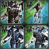
Саку
Ребаланс
-
- Удалены новые апгрейды пушек
- Теперь все саку могут транспортироваться
- Добавлены новые апгрейды на сенсоры
- Также были измено место положения на SACU
 Серафим
Серафим
-
- Серафим SACU стала дешевле но перестала давать врожденно +3 массы и +300 энергии.
- Масса:
2400 2050 нерф
- Энергия:
30200 25700 нерф
- Добыча массы врожденно:
3 1 нерф
- Добыча энергии врожденно:
300 20 бафф
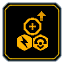
Добавлен полноценный ресурсный апгрейд
- Стоимость по массе: 300
- Стоимость по энергии: 20000
- Время строительства: 3360
Добавлен сенсор апгрейд
- Стоимость по массе: 4500
- Стоимость по энергии: 90000
- Добыча массы: 11/s
- Добыча энергии: 1000/s
 Оверчардж апгрейд
Оверчардж апгрейд
- Максимальный урон:
8000 15000 бафф
- Потребление Энергия:
5000 7500 бафф
- Перезарядка обилки ручная:
6/s 7/s нерф
- Перезарядка обилки автоматическая:
7/s 8/s нерф
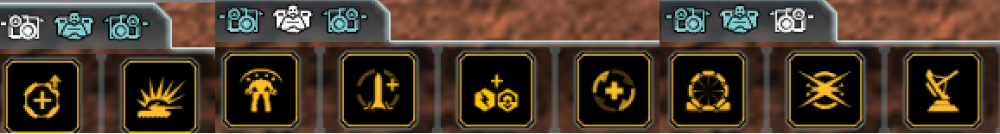
- Изменённые места апгрейдов для всех рук и торса
Офз
-
Добавлен сенсор апгрейд
- Стоимость по массе: 300
- Стоимость по энергии: 20000
- Время строительства: 3360
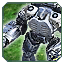
ОФЗ БМК
нерф
-
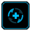
Система регенерации
- Масса:
800 1000 нерф
- Энергия:
24000 30000 нерф
- Скорость строительства:
800 1000 нерф
- Скорость регенерации:
40 50 бафф
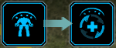
Удалён реген-щит ОФЗ
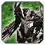
Кибран БМК
бафф
-
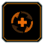
Система регенерации
- Масса:
1500 1250 бафф
- Энергия:
45000 37500 бафф
- Скорость строительства:
1500 1250 бафф
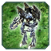
Серафим БМК
бафф
-
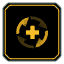
Система регенерации
- Масса:
1800 1400 бафф
- Энергия:
54000 43500 бафф
- Скорость строительства:
1800 1400 бафф
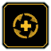
Система регенерации 2
- Масса:
5800 6200 нерф
- Энергия:
450000 462500 нерф
- Скорость строительства:
4600 5000 нерф
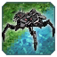
Мегалит
ребаланс
-
- С Мегалитом была проведена большая работа и корректировка его цифр урона, а также оживление механики производства яиц. Теперь Мегалит может производить яйца на ходу.
- Добавлена артиллерийская установка на спину:
- Урон в секунду: dps/100
- Урон по области: 10
- Радиус действия: 100
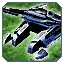
Т3 арта эон
нерф
Морские юниты
 Лодка маскировочного поля Кибран
Лодка маскировочного поля Кибран
нерф
-
- Дальность поля невидимости радаров:
50 40 нерф
- Дальность поля невидимости сонаров:
50 40 нерф
Воздушные юниты
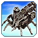
Т2 Транспорт Кибран
бафф
-
- Вместимость юнитов:
2 3 бафф
- Исправлен баг анимации с развёрткой: исправлен
 Воздушные штурмовики
Воздушные штурмовики
бафф
-
- Высота полёта:
10 18 бафф
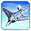
Истребитель ОФЗ (ОСА)
нерф
-
- Потребление энергии системы помех:
0 40 нерф
-
- Противовоздушные ракеты
dps 400 dps 120 нерф
Структуры
 Т3 Сонар Кибран
Т3 Сонар Кибран
нерф
-
- Потребление энергии:
600 1200 нерф